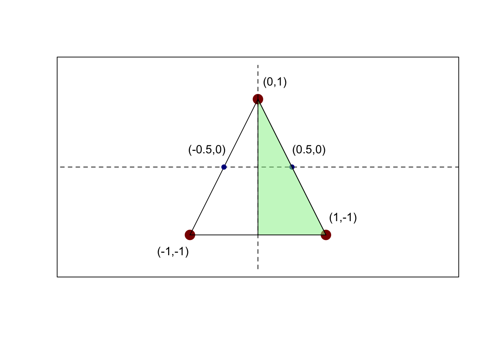

mean(replicate(500000, {
x <- rnorm(1, mean=3, sd=1)
y <- rnorm(1, mean=x, sd=1)
z <- rnorm(1, mean=y, sd=1)
x + y + z
}))[1] 8.994471\[\newcommand{\P}{\mathbb{P}}\newcommand{\E}{\mathbb{E}} \newcommand{\V}{\mathbb{V}} \newcommand{\bX}{\mathbf{X}} \newcommand{\bA}{\mathbf{A}} \newcommand{\bI}{\mathbf{I}} \newcommand{\C}{\mathbb{C}} \newcommand{\R}{\mathbb{R}} \newcommand{\bZ}{\mathbf{Z}}\] The original exam packet can be found here.
Let \(X \sim\mathcal{N}(3, 1)\) be a Gaussian random variable. Additionally, conditional on \(X = x\), let \(Y\) and \(Z\) be independent \(\mathcal{N}(x, 1)\) random variables. What is \(\E[X + Y + Z]\)?
This is a substantially simplified version of Question BH 7.8.11, only asking to find the mean instead of the joint distribution.
Since we do not have the full distributions of \(Y, Z\) and only their conditionals, the best tool is the law of total expectations:
\[\begin{align*} \E_{X, Y, Z}[X + Y + Z] &= \E_X[\E_{Y, Z}[X + Y+ Z|X]] \\ &= \E_X[X + X + X] \\ &= 3\E_X[X] \\ &= 3 * 3 \\ &= 9 \end{align*}\]
We can verify this empirically
mean(replicate(500000, {
x <- rnorm(1, mean=3, sd=1)
y <- rnorm(1, mean=x, sd=1)
z <- rnorm(1, mean=y, sd=1)
x + y + z
}))[1] 8.994471or more efficiently:
n <- 50000
x <- rnorm(n, mean=3, sd=1)
y <- rnorm(n, mean=x, sd=1)
z <- rnorm(n, mean=x, sd=1)
mean(x + y + z)[1] 9.018671Alternatively, we can identify the joint distribution of \(X, Y, Z\) as follows:
\[\begin{align*} f_{X, Y, Z}(x, y, z) &= f_{X}(x) * f_{Y|X=x}(y) f_{Z|X=x, Y=y}(z) \\ &= f_{X}(x) * f_{Y|X=x}(y) f_{Z|X=x}(z) \quad \text{ ($Z$ is conditionally independent of $Y$ given $X$)}\\ &\propto e^{-(x-3)^2/2} e^{-(y-x)^2/2} e^{-(z-x)^2/2} \\ &\propto \exp\left\{-\frac{x^2 - 6x + 9 + y^2 - 2xy + x^2 + z^2 - 2xz + z^2}{2}\right\} \\ &\propto \exp\left\{-\frac{3x^2 + y^2 + z^2 - 6x- 2xy - 2xz + 9}{2}\right\} \\ &\propto \exp\left\{-\frac{\langle (x, y, z) - (3, 3, 3), \begin{pmatrix} 3 & -1 & -1 \\ -1 & 1 & 0 \\ -1 & 0 & 1\end{pmatrix}(x, y, z) - (3, 3, 3)\rangle}{2}\right\} \end{align*}\] From this, we see that \((X, Y, Z)\) follows a multivariate normal distribution with mean \((3, 3, 3)\) and variance
\[\Sigma^{-1} = \begin{pmatrix} 3 & -1 & -1 \\ -1 & 1 & 0 \\ -1 & 0 & 1\end{pmatrix} \implies \Sigma = \begin{pmatrix} 1 & 1 & 1 \\ 1 & 2 & 1 \\ 1 & 1 & 2 \end{pmatrix}\]
but this requires some rather advanced algebra and it is far easier to work from the basic principles of multivariate normal distributions under linear transformations.
Let \(X \sim\mathcal{N}(3, 1)\) be a Gaussian random variable. Additionally, conditional on \(X = x\), let \(Y\) and \(Z\) be independent \(\mathcal{N}(x, 1)\) random variables. What is \(\V[X + Y + Z]\)?
This is a substantially simplified version of Question BH 7.8.11, only asking to find the variance instead of the joint distribution.
As before, since we do not have the full distributions of \(Y, Z\) and only their conditionals, the best tool is the law of total variance:
\[\begin{align*} \V[X + Y + Z] &= \E_X[\V_{Y, Z}[X + Y + Z|X]] + \V_X[\E_{Y, Z}[X + Y + Z|X]] \\ &= \E_X[\V_{Y}[Y|X] + \V_Z[Z|X]] + \V_X[\E_{Y, Z}[X|X] + \E_{Y, Z}[Y|X] + \E_{Y, Z}[Z|X]] \\ &= \E_X[1 + 1] + \V_X[X + X + X] \\ &= 2 + \V_X[3X] \\ &= 2 + 3^2\V_X[X] \\ &= 2 + 3^2 \\ &= 11 \end{align*}\]
which we can verify empirically:
n <- 500000
x <- rnorm(n, mean=3, sd=1)
y <- rnorm(n, mean=x, sd=1)
z <- rnorm(n, mean=x, sd=1)
var(x + y + z)[1] 11.02902In fact, we can empirically confirm that we computed all of the covariance matrix \(\Sigma\) correctly this way:
n <- 500000
x <- rnorm(n, mean=3, sd=1)
y <- rnorm(n, mean=x, sd=1)
z <- rnorm(n, mean=x, sd=1)
SAMPLES <- cbind(x, y, z)
round(var(SAMPLES), 2) x y z
x 1 1 1
y 1 2 1
z 1 1 2Not too shabby! And far easier than approaching it analytically.
What is the variance of a \(\chi^2\) random variable with \(5\) degrees of freedom? You may use the fact that the fourth moment of a standard normal random variable is \(\E[Z^4] = 3\).
This question is a new question, designed to test i) whether you know how to decompose a \(\chi^2\) into simpler parts and ii) how effectively you work with independent standard normal distributions to avoid nasty calculations.
From the formula sheet, we recall that the \(\chi^2\) random variable can be written as \[X = Z_1^2 + Z_2^2 + Z_3^2 + Z_4^2 + Z_5^2 = \sum_{i=1}^5 Z_i^2.\] Because these are independent terms, the variance is not too hard to compute.
\[\begin{align*} \V[X] &= \V\left[\sum_{i=1}^5 Z_i^2\right] \\ &= \sum_{i=1}^5 \V[Z_1^2] \\ &= 5 * \V[Z_1^2] \\ &= 5 * (\E[(Z_1^2)^2] - \E[Z_1^2]^2)\\ &= 5 * (\E[Z_1^4] - \E[Z_1^2]^2)\\ &= 5 * (3 - 1^2) \\ &= 10 \end{align*}\]
Again, simulation verifies:
Let \(P\) be a point chosen uniformly at random on the surface of the Earth. What is the probability that \(P\) falls in both the Northern and the Western hemispheres?
This is a new question, designed to test how well you understand what a uniform distribution implies.
The intersection of the Northern and Western hemispheres is 1/4 of the globe and area is proportional to probability for uniform distributions.
Alternatively, note that
\[\P(\text{North-Half} \cap \text{West-Half}) = \P(\text{North-Half})\P(\text{West-Half}) = \frac{1}{2}*\frac{1}{2} = \frac{1}{4}\]
where uniformity on a symmetric shape (sphere) gives independence of the coordinates.
Suppose \(X\) follows a Pareto distribution with CDF \(F_X(x) = 1 - 1/x^2\) supported on \([1, \infty)\). What is \(\E[X | X > 8]\)?
Hint: The Pareto distribution satisfies a `restarting’ property: \(F_{X|X > x_0}(x) = 1 - (x_0/x)^2\) supported on \([x_0, \infty)\).
This is a composite of Question 1 from the Week 6 Quiz and Question 1 from the Week 7 Quiz.
As a warm-up, let’s first compute \(\E[X]\). To do so, we need the PDF:
\[f_X(x) = F'_X(x) = \frac{\text{d}}{\text{d}x}\left(1 - \frac{1}{x^2}\right) = \frac{2}{x^3}\]
We use this to compute the expectation:
\[\begin{align*} \E[X] &= \int_1^{\infty} x * f_X(x)\,\text{d}x \\ &= \int_1^{\infty} x * \frac{2}{x^3}\,\text{d}x \\ &= 2\int_1^{\infty} x^{-2}\,\text{d}x \\ &= 2\left(\left. -x^{-1}\right|_{x=1}^{\infty}\right) \\ &= 2 \left(-\frac{1}{\infty} - -\frac{1}{1}\right) \\ &= 2 \end{align*}\]
Following the hint, to use this to get the tail-conditional expectation, we the re-starting property to get the conditional PDF:
\[f_{X|X \geq x_0}(x) = F'_{X|X \geq x_0}(x) = \frac{\text{d}}{\text{d}x}\left(1 - \left( \frac{x_0}{x}\right)^2\right) = \frac{2x_0^2}{x^3}\]
This lets us compute the tail conditional expectation:
\[\begin{align*} \E[X|X \geq 8] &= \int_8^{\infty} x * f_{X|X \geq 8}(x)\,\text{d}x \\ &= \int_8^{\infty} x * \frac{2 * 8^2}{x^3}\,\text{d}x \\ &= 128\int_8^{\infty} x^{-2}\,\text{d}x \\ &= 128\left(\left. -x^{-1}\right|_{x=8}^{\infty}\right) \\ &= 128 \left(-\frac{1}{\infty} - -\frac{1}{8}\right) \\ &= 16 \end{align*}\]
We can verify this in simulation. R doesn’t have a built-in Pareto RNG, but we can make our own pretty simply:
[1] 16.10753Note here the connections between conditional probabilities and subsetting.
If you step back, you can notice that the Pareto distribution exhibits the Lindy effect, whereby conditioning on being in the tail significantly raises the expectation beyond a linear shift. For this data, we note that we only conditioned the support over by 7, but the expectation increased by 14.
Aside: The “restarting” property has fascinating implications on its own. If incomes are Pareto distributed and follow a “top 20% have 80% of the income” rule, this implies in turn that the “top 20% of the top 20% have 80% of 80% of the income” or “top 4% have 64% of the income” and “top 0.8% have 51.2% of the income” ad infinitum.
Let \(X\) and \(Y\) have joint PDF \(f_{(X, Y)}(x, y) = cxy\) for \(0 \leq x \leq y \leq 1\). What is \(c\)?
This is Question BH 7.8.17(a).
We know that the PDF must integrate to 1 so we have
\[\begin{align*} 1 &= \iint_{(x, y)} f_{X, Y}(x, y) \,\text{d}x\,\text{d}y \\ &= \int_0^1 \int_0^y cxy\,\text{d}x\,\text{d}y \\ &= c\int_0^1 \int_0^y xy\,\text{d}x\,\text{d}y \\ \implies c^{-1} &= \int_0^1 \int_0^y xy\,\text{d}x\,\text{d}y \end{align*}\]
We can compute this directly:
\[\begin{align*} c^{-1} &= \int_0^1 \int_0^y xy\,\text{d}x\,\text{d}y \\ &= \int_0^1 \left(\left.\frac{x^2y}{2}\right|_{x=0}^{x=y}\right) ,\text{d}y\\ &= \int_0^1 \frac{y^3}{2} ,\text{d}y\\ &= \left.\frac{y^4}{8}\right|_{y=0}^1 \\ &= \frac{1}{8}\\ \implies c &= 8 \end{align*}\]
Computing this integral directly in R is a bit tricky, but we can do it:
inner_int <- function(y) integrate(function(x) 8 * x * y, lower=0, upper=y)$value
inner_int <- Vectorize(inner_int, "y")
integrate(inner_int, lower=0, upper=1)1 with absolute error < 1.1e-14Note that, because the bounds of \(X\) depend on the value of \(Y\), we don’t have independence nor can we “factor out” certain terms during our integration. We have to be a bit more careful here.
On average, Baruch students have to wait 5 minutes to catch an elevator. Use Markov’s inequality to give an upper bound on the probability that it takes more than 15 minutes to get an elevator.
This is essentially Question 2 from the Week 6, with the mean changed.
Markov’s Inequality gives us:
\[\P(X > x) \leq \frac{\E[X]}{x}.\]
We take \(\E[X] = 5\) and \(x = 15\) in the above to get:
\[\P(X > x) \leq \frac{1}{3}.\]
Let \(X_1 = 3 + 2Z_1 + 4Z_2\) and \(X_2 = 5 + 4Z_1 - 6Z_2\) where \(Z_1, Z_2\) are independent standard normal variables. What is the correlation of \(X_1\) and \(X_2\), \(\rho_{X_1, X_2}\)?
This is a new question, designed to test your fluency with variance and covariance.
We first need the variance of \(X_1\) and \(X_2\) marginally:
\[\begin{align*} \V[X_1] &= \V[3 + 2Z_1 + 4Z_2] \\ &= 2^2\V[Z_1] + 4^2\V[Z_2] \\ &= 4 * 1 + 16 * 1 \\ &= 20 \end{align*}\] and
\[\begin{align*} \V[X_2] &= \V[5 + 4Z_1 - 6Z_2] \\ &= 4^2\V[Z_1] + (-6)^2\V[Z_2] \\ &= 4^2 * 1 + (-6)^2 * 1 \\ &= 52 \end{align*}\]
Next, we compute the covariance:
\[\begin{align*} \C[X_1, X_2] &= \C[3 + 2Z_1 + 4Z_2,5 + 4Z_1 - 6Z_2] \\ &= 2 * 4 \C[Z_1, Z_1] + 2 * (-6) \C[Z_1, Z_2] + 4 * 4 \C[Z_1, Z_2] + 4 * (-6) \C[Z_2, Z_2] \\ &= 8 \V[Z_1] + (-12) * 0 + 16 * 0 + (-24) * \V[Z_2] \\ &= -16 \end{align*}\]
We can put these together to get the correlation:
\[\rho_{X_1, X_2} = \frac{\C[X_1, X_2]}{\sqrt{\V[X_1]\V[X_2]}} = \frac{-16}{\sqrt{20 * 52}} \approx -49.6\%\]
This was a bit of a lift, so let’s see how we might do it using R.
First, in simulation:
n <- 1e7
Z1 <- rnorm(n)
Z2 <- rnorm(n)
X1 <- 3 + 2 * Z1 + 4 * Z2
X2 <- 5 + 4 * Z1 - 6 * Z2
cor(X1, X2)[1] -0.4957638Alternatively, we can work analytically if we note that \((X_1, X_2)\) have a multivariate normal distribution given by:
\[\begin{pmatrix} X_1 \\ X_2 \end{pmatrix} = \begin{pmatrix} 3 \\ 5 \end{pmatrix} + \begin{pmatrix} 2 & 4 \\ 4 & -6 \end{pmatrix} \begin{pmatrix} Z_1 \\ Z_2 \end{pmatrix}\]
We then use the relationship \[\V[\bX] = \V[\mu + \bA\bZ] = \bA\bV[\bZ]\bA^T = \bA\bI\bA^T = \bA\bA^T\] to compute the covariance and then correlation directly:
[,1] [,2]
[1,] 100.0 -49.6
[2,] -49.6 100.0Not too shabby!
Let \(X, Y\) have a joint distribution with PDF of the form \[f_{(X, Y)}(x, y) = c \exp\left\{-\frac{x^2}{8}-\frac{y^2}{50}\right\}\] supported on \(\R^2\) (that is, \(X, Y\) can both be any real number). What is \(c\)?
This is Question 3 from the Week 8 Quiz, with different variances.
We recognize that this distribution factorizes into two independent parts: \[f_{(X, Y)}(x, y) = c \exp\left\{-\frac{x^2}{8}-\frac{y^2}{50}\right\} = \left(c_X \exp\left\{-\frac{x^2}{8}\right\}\right)\left(c_Y\exp\left\{-\frac{y^2}{50}\right\}\right) = f_X(x)f_Y(y)\] where \(c = c_Xc_Y\). To compute \(c_X\), we note that this exponential fits a normal PDF with mean \(\mu = 0\) and variance \(\sigma^2 = 4\), so \[f_X(x) = \textsf{NormalPDF}(x; 0, 4) = \frac{1}{2\sqrt{2\pi}} e^{-x^2/(2 * 2^2)}\] implying \(c_X = 1/2\sqrt{2\pi}\). Similarly, we get \(c_Y = 1/5\sqrt{2\pi}\). Putting these together, we get
\[c = c_X c_Y = \frac{1}{2\sqrt{2\pi}}\frac{1}{5\sqrt{2\pi}} = \frac{1}{20\pi}.\]
As before, it’s a bit tricky to do the double integral in R, but we can check our work:
inner_int <- function(y) integrate(function(x) exp(-x^2/8 - y^2/50)/(20 * pi), lower=-Inf, upper=Inf)$value
inner_int <- Vectorize(inner_int, "y")
integrate(inner_int, lower=-Inf, upper=Inf)1 with absolute error < 3.3e-07as desired.
Suppose that a father and son are selected from a population whose heights are \(\mathcal{N}(72, 6^2)\); suppose further that the correlation between heights within a family is \(\rho = 1/3\). What is the probability that the son is more than 3 inches taller than his father?
This is a simplified form of BH 7.8.78.
Let \(F, S\) be the heights of the father and son respectively. We have
\[\P(S > F + 3) = \P(S - F > 3) = 1 - \P(S - F < 3) = 1 - F_{S - F}(3)\]
so we just need to compute the CDF of \(S - F\). Since \(S, F\) are jointly normal, their difference is also normal. We thus only need to compute its mean and variance.
\[\E[S - F] = \E[S] - \E[F] = 72 - 72 = 0\]
and
\[\V[S - F] = \V[S] - 2\C[S, F] + \V[F] = \sigma_S^2 - 2 \sigma_S\sigma_F\rho_{S, F} + \sigma_F^2 = 6^2 - 2 * 6 * 6 * \frac{1}{3} + 6^2 = 48\]
Hence, standardization of \(S - F\) gives us:
\[\P(S > F + 3) = 1 - F_{S - F}(3) = 1 - \Phi\left(\frac{3 - 0}{\sqrt{48}}\right) \approx 33.3\%\]
Again, we can verify this in simulation. We need to be able to generate correlated variables and most multivariate normal samplers take the variance matrix as the input:
\[\V[(S, F)] = \begin{pmatrix} 6^2 & 6 * 6 * \frac{1}{3} \\ 6 * 6 * \frac{1}{3} & 6^2 \end{pmatrix} = \begin{pmatrix} 36 & 12 \\ 12 & 36 \end{pmatrix}\] Next, we use MASS::mvrnorm to generate our samples:
Let \(X \sim \mathcal{N}(3, 5^2)\) and \(Y \sim \mathcal{N}(-5, 3^2)\) be independent random variables. What is \(\V[XY]\)?
This is a special case of BH Question 7.8.51.
Recall \[\V[Z] = \E[Z^2] - \E[Z]^2 \Leftrightarrow \E[Z^2] = \V[Z] + \E[Z]^2.\] We will use this result several times. Specifically, to compute \(\V[XY]\), we need to first compute \(\E[(XY)^2]\) and \(\E[XY]^2\). With independence of \(X, Y\), this isn’t too hard:
\[\begin{align*} \E[XY] &= \E[X]\E[Y] \\ &= 3 * (-5) \\ &= -15 \end{align*}\]
and
\[\begin{align*} \E[(XY)^2] &= \E[X^2Y^2] \\ &= \E[X^2]\E[Y^2] \\ &= (\V[X] + \E[X]^2)(\V[Y] + \E[Y]^2) \\ &= (5^2 + 3^2)(3^2 + (-5)^2) \\ &= 1156 \end{align*}\]
Together, these give us:
\[\V[XY] = \E[(XY)^2] - \E[XY]^2 = 1156 - (-15)^2 = 931\] We can, as always, verify this in simulation:
Let \(X\) have a log-normal distribution given by \(X = e^{3 + 2Z}\) where \(Z\) is a standard normal distribution. What is the mode of \(X\)?
Hints:
This is the core calculation of Question BH 6.10.9, removing the proof elements.
Per the hint, we need to compute \(f_X(x)\) first. It is easiest to start from the CDF:
\[\begin{align*} F_X(x) &= \P(X \leq x) \\ &= \P(e^{3 + 2Z} \leq x) \\ &= \P(3 + 2Z \leq \ln(x) )\\ &= \P\left(Z \leq \frac{\ln(x) - 3}{2}\right)\\ &= \Phi\left(\frac{\ln(x) - 3}{2}\right) \end{align*}\]
Differentiation gives us the desired PDF:
\[\begin{align*} f_X(x) &= F'_X(x) \\ &= \frac{\text{d}}{\text{d}x}\Phi\left(\frac{\ln(x) - 3}{2}\right) \\ &= \Phi'\left(\frac{\ln(x) - 3}{2}\right) \frac{\text{d}}{\text{d}x}\left(\frac{\ln(x) - 3}{2}\right)\\ &= \phi\left(\frac{\ln(x) - 3}{2}\right) \frac{1}{2x} \\ &= \frac{1}{2x\sqrt{2\pi}}\exp\left\{-\left(\frac{\ln(x)-3}{2}\right)^2/2\right\} \end{align*}\]
Now to get the mode, we need to find the maximum. We can compute \(f'_X(x)\) directly, but it turns out to be cleaner to take another log first. This works because \(\log\) is a monotonic transformation, so maximizing \(\log f\) is the same as maximizing \(f\).
\[\begin{align*} \ln f(x) &= -\left(\frac{\ln(x)-3}{2}\right)^2/2 + \ln\left(\frac{1}{2x\sqrt{2\pi}}\right) \\ &= -(\ln(x)-3)^2/8 -\ln(x) + C \\ (\ln f(x))' &= -\frac{2(\ln(x)-3) * x^{-1}}{8} - \frac{1}{x} \\ &= -\frac{(\ln(x)-3)}{4x} - \frac{1}{x} \\ \end{align*}\]
We set this to zero and find that \(x = e^1\) is the mode:
\[\begin{align*} 0 &= -\frac{(\ln(x)-3)}{4x} - \frac{1}{x} \\ \implies 0 &= -\frac{(\ln(x)-3)}{4} - 1\\ &= \frac{\ln(x)-3}{4}+1 \\ &= \ln(x)-3 + 4\\ &= \ln(x) +1 \\ \ln(x) &= -1 \\ x &= e^{-1} \end{align*}\]
It’s hard to estimate the mode of a continuous random variable from data, but we can see that a kernel density estimate isn’t too far off:
library(ggplot2)
n <- 5e7
Z <- rnorm(n)
X <- exp(3 + 2 * Z)
D <- data.frame(X = X)
ggplot(D, aes(x=X)) +
geom_density() +
geom_vline(xintercept = exp(-1), color="red4") +
xlim(c(0, 5)) +
xlab("X ~ LogNormal(3, 2^2) [Truncated]") +
ylab("Estimated Density") +
theme_bw()Warning: Removed 37829891 rows containing non-finite outside the scale range
(`stat_density()`).Let \((X, Y)\) be a point selected uniformly at random from (the interior of) the triangle with corners at \((-1, -1)\), \((+1, -1)\) and \((0, +1)\). What is the probability that \(X\) is positive?
Hint: Remember that the area of a triangle is \(1/2 * \textsf{base} * \textsf{height}\).
This is a new question, designed to test your use of uniform distributions.
It is useful to draw a picture here:
plot(c(), type="n",
xlim=c(-1.5, 1.5), ylim=c(-1.5, 1.5),
asp=1, xlab="", ylab="", xaxt="n", yaxt="n")
points(x=c(-1, 0, 1),
y=c(-1, 1, -1),
pch=16, cex=2, col="red4")
segments(x0=c(-1, -1, 0),
y0=c(-1, -1, 1),
x1=c(1, 0, 1),
y1=c(-1, 1, -1))
segments(x0=-4.5,
x1=+4.5,
y0=0,
lty=2)
segments(y0=-1.5,
y1=+1.5,
x0=0,
lty=2)
points(x=c(-1/2, 1/2), y=c(0, 0), col="blue4", pch=16, cex=1)
label_point <- function(x, y, xoffset=0.25, yoffset=xoffset){
text(x=x + xoffset, y=y + yoffset, labels=paste0("(", x, ",", y, ")"))
}
polygon(x=c(0, 0, 1),
y=c(-1, 1, -1),
col=alpha("lightgreen", 0.5))
label_point(0, 1)
label_point(-1, -1, xoffset=-0.25)
label_point(+1, -1)
label_point(-1/2, 0, xoffset=-0.25, yoffset=0.25)
label_point(+1/2, 0)
From this we see \(\P(X > 0) = \frac{1}{2}\) by symmetry around the \(y\)-axis.
When I wrote this question, I meant to ask for \(\P(Y > 0)\). Solution for that problem follows below.
It is useful to draw a picture here:
plot(c(), type="n",
xlim=c(-1.5, 1.5), ylim=c(-1.5, 1.5),
asp=1, xlab="", ylab="", xaxt="n", yaxt="n")
points(x=c(-1, 0, 1),
y=c(-1, 1, -1),
pch=16, cex=2, col="red4")
segments(x0=c(-1, -1, 0),
y0=c(-1, -1, 1),
x1=c(1, 0, 1),
y1=c(-1, 1, -1))
segments(x0=-4.5,
x1=+4.5,
y0=0,
lty=2)
segments(y0=-1.5,
y1=+1.5,
x0=0,
lty=2)
points(x=c(-1/2, 1/2), y=c(0, 0), col="blue4", pch=16, cex=1)
label_point <- function(x, y, xoffset=0.25, yoffset=xoffset){
text(x=x + xoffset, y=y + yoffset, labels=paste0("(", x, ",", y, ")"))
}
polygon(x=c(-0.5, 0, 0.5),
y=c(0, 1, 0),
col=alpha("lightgreen", 0.5))
label_point(0, 1)
label_point(-1, -1, xoffset=-0.25)
label_point(+1, -1)
label_point(-1/2, 0, xoffset=-0.25, yoffset=0.25)
label_point(+1/2, 0)Since we are dealing with a uniform distribution, it suffices to compute the area of the big triangle and the area of the smaller (green) triangle and take their ratio:
\[\P(\text{Upper Half-Plane}) = \frac{\text{Area}(\text{Green})}{\text{Area}(\Omega)} = \frac{\frac{1}{2}*1 *1}{\frac{1}{2}*2*2} = \frac{1}{4}\]
If you prefer a visual argument, note that all four shaded triangles in the image have the same area.
plot(c(), type="n",
xlim=c(-1.5, 1.5), ylim=c(-1.5, 1.5),
asp=1, xlab="", ylab="", xaxt="n", yaxt="n")
points(x=c(-1, 0, 1),
y=c(-1, 1, -1),
pch=16, cex=2, col="red4")
segments(x0=c(-1, -1, 0),
y0=c(-1, -1, 1),
x1=c(1, 0, 1),
y1=c(-1, 1, -1))
segments(x0=-4.5,
x1=+4.5,
y0=0,
lty=2)
segments(y0=-1.5,
y1=+1.5,
x0=0,
lty=2)
points(x=c(-1/2, 1/2), y=c(0, 0), col="blue4", pch=16, cex=1)
label_point <- function(x, y, xoffset=0.25, yoffset=xoffset){
text(x=x + xoffset, y=y + yoffset, labels=paste0("(", x, ",", y, ")"))
}
polygon(x=c(-0.5, 0, 0.5),
y=c(0, 1, 0),
col=alpha("lightgreen", 0.5))
polygon(x=c(-1, -0.5, 0),
y=c(-1, 0, -1),
col=alpha("lightblue", 0.5))
polygon(x=c(-0.5, 0, 0.5),
y=c(0, -1, 0),
col=alpha("lightyellow", 0.5))
polygon(x=c(1, 0.5, 0),
y=c(-1, 0, -1),
col=alpha("lightpink", 0.5))
label_point(0, 1)
label_point(-1, -1, xoffset=-0.25)
label_point(+1, -1)
label_point(-1/2, 0, xoffset=-0.25, yoffset=0.25)
label_point(+1/2, 0)Hence the probability of falling in the green area is \(1/4\).
Let \(\bZ\) be a vector of 5 independent standard normal random variables. What is \(\E[\|\bZ\|^2]\)?
This is a simplified form of Question 4 from the Normal Distribution handout. Note that this complements Question 3 above as, taken together, these calculate the mean and variance of a \(\chi^2\) distribution.
\[\begin{align*} \E[\|\bZ\|^2] &= \E\left[Z_1^2 + Z_2^2 + Z_3^2 + Z_4^2 + Z_5^2\right] \\ &= \E[Z_1^2] + \E[Z_2^2] + \E[Z_3^2] + \E[Z_4^2] + \E[Z_5^2] \\ &= 1 + 1 + 1 + 1 + 1 \\ &= 5 \end{align*}\]
Let \((X, Y)\) be bivariate normal with \(X \sim \mathcal{N}(0, 3^2)\) and \(Y \sim \mathcal{N}(0, 4^2)\) marginally and correlation \(\rho_{X, Y} = 50\%\). What is the value of \(c\) such that \(Y - cX\) is independent of \(X\)?
This is Question BH 7.8.77 with specific numbers.
Because \(X, Y\) are multivariate normal, it suffices to show 0 covariance to show independence. We first compute the covariance of \(Y - cX\) and \(X\):
\[\begin{align*} \C[X, Y - cX] &= \C[X, Y] - c\C[X, X] \\ &= \C[X, Y] - c\V[X] \\ &= \sigma_X\sigma_Y\rho_{XY} - c\sigma_X^2 \\ &= 3 * 4 * 0.5 - c * 3^2 \\ &= 6 - 9c \end{align*}\]
Setting \(c = 2/3\) sets this to zero and achieves independence.
We can verify this in simulation:
library(MASS)
mu <- c(0, 0)
sigma_X <- 3
sigma_Y <- 4
rho_XY <- 0.5
Sigma <- matrix(c(sigma_X^2, sigma_X * sigma_Y * rho_XY,
sigma_X * sigma_Y * rho_XY, sigma_Y^2), nrow=2)
SAMPLES <- mvrnorm(1e7, mu, Sigma)
X <- SAMPLES[,1]
Y <- SAMPLES[,2]
cor(X, Y - 2/3 * X)[1] -0.0003848025We can also show this with linear algebra:
\[\begin{pmatrix} X \\ Y \end{pmatrix} \sim \mathcal{N}\left(\begin{pmatrix} 0 \\ 0 \end{pmatrix}, \begin{pmatrix} 9 & 6 \\ 6 & 16 \end{pmatrix} \right)\]
with
\[\begin{pmatrix} X \\ Y - cX \end{pmatrix} = \begin{pmatrix} 1 & 0 \\ -c & 1 \end{pmatrix} \begin{pmatrix} X \\ Y \end{pmatrix}\]
Using the variance formula \(\V[\bA\bX] = \bA\V[\bX]\bA^T\) we find that:
\[\begin{align*} \V\left[\begin{pmatrix} X \\ Y - cX \end{pmatrix}\right] &= \V\left[\begin{pmatrix} 1 & 0 \\ -c & 1 \end{pmatrix} \begin{pmatrix} X \\ Y \end{pmatrix}\right] \\ &= \begin{pmatrix} 1 & 0 \\ -c & 1 \end{pmatrix} \V\left[\begin{pmatrix} X \\ Y \end{pmatrix}\right]\begin{pmatrix} 1 & 0 \\ -c & 1 \end{pmatrix}^T \\ &= \begin{pmatrix} 1 & 0 \\ -c & 1 \end{pmatrix}\begin{pmatrix} 9 & 6 \\ 6 & 16 \end{pmatrix}\begin{pmatrix} 1 & 0 \\ -c & 1 \end{pmatrix}^T \\ &= \begin{pmatrix} 1 & 0 \\ -c & 1 \end{pmatrix}\begin{pmatrix} 9 & 6 \\ 6 & 16 \end{pmatrix}\begin{pmatrix} 1 & -c \\ 0 & 1 \end{pmatrix} \\ &= \begin{pmatrix} 1 & 0 \\ -c & 1 \end{pmatrix}\begin{pmatrix} 9 & 6 \\ 6 & 16 \end{pmatrix}\begin{pmatrix} 1 & -c \\ 0 & 1 \end{pmatrix} \\ &=\begin{pmatrix} 9 & 6 - 9c \\ 6 - 9c & 9c^2 - 12c + 16 \end{pmatrix} \end{align*}\]
Setting \(c = 2/3\), we get
\[ = \V\left[\begin{pmatrix} X \\ Y - cX \end{pmatrix}\right] = \begin{pmatrix} 9 & 0 \\ 0 & 12 \end{pmatrix}\]
This is a diagonal covariance matrix for a multivariate normal, so its elements are independent, as desired.
Suppose \(X\) has a Pareto distribution with parameter \(5\) and a PDF given by \(f_X(x) = 5 / x^6\) supported on \([1, \infty)\). What is the median of \(X\)?
This is Question BH 6.10.3.
We integrate the PDF to get the CDF:
\[\begin{align*} F_X(x) &= \int_1^{x} \frac{5}{z^6} \,\text{d}z \\ &= \left.\frac{1}{z^5}\right|_{z=1}^{x} \\ &= \left(\frac{1}{1^5} - \frac{1}{x^5}\right) \\ &= 1 - \frac{1}{x^5} \end{align*}\]
To find the median, we set this to \(50\%\) and solve for \(x\):
\[ 0.5 = 1 - \frac{1}{m^5} \implies m = 2^{1/5} \approx 1.15\]
As always, we can check this in simulation:
Suppose that \((X, Y)\) are binary random variables generated according to the following joint distribution. What is the covariance of \(X\) and \(Y\)?
| \(\P\) | \(X=0\) | \(X=1\) |
|---|---|---|
| \(Y = 0\) | \(1/3\) | \(1/12\) |
| \(Y = 1\) | \(1/2\) | \(1/12\) |
This is essentially Question 1 from the Week 8 Quiz.
We first compute the marginal distributions of \(X\) and \(Y\) by summing across columns and rows respectively:
| \(\P\) | \(X=0\) | \(X=1\) |
|---|---|---|
| \(5/6\) | \(1/6\) |
| \(\P\) | \(Y=0\) | \(Y=1\) |
|---|---|---|
| \(5/12\) | \(7/12\) |
From these, we get \(\E[X] = 1/6\) and \(\E[Y] = 7/12\).
From the joint distribution, we get \(\E[XY] = 1/12\) so
\[\C[X, Y] = \E[XY] - \E[X]\E[Y] = \frac{1}{12} - \frac{1}{6}\frac{7}{12} = -\frac{1}{72} \approx -1.39\%\]
Let \((X, Y)\) come from a multivariate normal distribution with mean \(\mu = (3, 4)\) and variance matrix \[\Sigma = \begin{pmatrix} 25 & 9 \\ 9 & 9 \end{pmatrix}\] What is the correlation of \(X\) and \(Y\)?
This is a new question designed to test your ability to work with a given covariance matrix.
Recall \[\rho_{X, Y} = \frac{\C[X, Y]}{\sqrt{\V[X]\V[Y]}}.\] We can read these numbers directly off \(\Sigma\): \[\rho_{X, Y} = \frac{\C[X, Y]}{\sqrt{\V[X]\V[Y]}} = \frac{9}{\sqrt{25 * 9}} = \frac{9}{5 * 3} = \frac{9}{15} = 60\%\]
In simulation:
library(MASS)
mu <- c(3, 4)
Sigma <- matrix(c(25, 9, 9, 9), nrow=2)
X <- mvrnorm(1e7, mu, Sigma)
cor(X) [,1] [,2]
[1,] 1.000000 0.600016
[2,] 0.600016 1.000000The off-diagonal element gives us the correlation of the two random variables.
The trace of a matrix is the sum of the elements on its diagonal. Suppose \((X, Y)\) is a random vector with variance matrix \(\Sigma = \begin{pmatrix} 25 & 1 \\ 1 & 4\end{pmatrix}\). What is the trace of the variance matrix of the vector \((Z, W) = (2X + 3Y, X - Y)\)?
Hint: Note that \[\begin{pmatrix} Z \\ W \end{pmatrix} = \begin{pmatrix} 2 & 3 \\ 1 & -1 \end{pmatrix}\begin{pmatrix}X \\ Y\end{pmatrix}.\]
This is a new question, designed to encourage you to do matrix multiplication by hand (though strictly speaking, you don’t need to).
As the hint suggests, we express
\[\begin{align*} \V\left[\begin{pmatrix} Z \\ W \end{pmatrix}\right] &= \V\left[\begin{pmatrix} 2 & 3 \\ 1 & -1 \end{pmatrix}\begin{pmatrix}X \\ Y\end{pmatrix}\right] \\ &= \begin{pmatrix} 2 & 3 \\ 1 & -1 \end{pmatrix}\V\left[\begin{pmatrix}X \\ Y\end{pmatrix}\right]\begin{pmatrix} 2 & 3 \\ 1 & -1 \end{pmatrix}^T \\ &= \begin{pmatrix} 2 & 3 \\ 1 & -1 \end{pmatrix}\begin{pmatrix} 25 & 1 \\ 1 & 4 \end{pmatrix}\begin{pmatrix} 2 & 1 \\ 3 & -1 \end{pmatrix} \\ &= \begin{pmatrix} 148 & 39 \\ 39 & 27 \end{pmatrix} \end{align*}\] so the trace is \(148 + 27 = 175\).
Alternatively, we note that the trace is just \(\V[Z] + \V[W]\) (not \(\V[Z + W]\)!) so we can compute those terms separately:
\[\V[Z] = \V[2X + 3Y] = 4\V[X] + 2 * 6\C[X, Y] + 9\V[Y] = 148\]
\[\V[W] = \V[X - Y] = \V[X] - 2\C[X, Y] + \V[Y] = 25 - 2 + 4 = 27\]
giving a total of \(175\) as above.
Suppose \(X_1, \dots, X_{16}\) are samples from a distribution with variance 25 and unknown mean. Using Chebyshev’s inequality, give an upper bound on the probability that the sample mean \(\overline{X} = \frac{1}{16}\sum_{i=1}^{16} X_i\) is more than 3 units away from the true mean?
This new question closely follows the discussion in the Heavy Tails notes.
We first note that \[\V[\overline{X}] = \V\left[\frac{1}{16}\sum_{i=1}^{16} X_i\right] = \frac{1}{16^2}\sum_{i=1}^{16}\V[X_i] = \frac{1}{16^2}\sum_{i=1}^{16}25 = \frac{25}{16}.\]
Putting this in Chebyshev’s inequality we obtain:
\[\P(|\overline{X} - \E[\overline{X}] > 3) \leq \frac{\frac{25}{16}}{3^2} = \frac{25}{144} \approx 17.3\%\]
To verify this upper bound, we can find a distribution for which it is tight. For Chebyshev, tightness is obtained by variables of the form
\[X = \begin{cases} -5 & \text{ with probability } 0.5 \\ +5 & \text{ with probability } 0.5 \end{cases}\]
This distribution has \(\V[X] = 25\) with \(\E[X] = 0\). By our calculation above, we have \(\V[\overline{X}] = 25/16\).
or more efficiently:
X <- 10 * rbinom(1e7 * 16, size=1, prob=0.5) - 5
X <- matrix(X, ncol=16)
X_bar <- rowMeans(X)
var(X_bar)[1] 1.562752and we can verify the Chebyshev bound holds:
X <- 10 * rbinom(1e7 * 16, size=1, prob=0.5) - 5
X <- matrix(X, ncol=16)
X_bar <- rowMeans(X)
mean(abs(X_bar - 0) > 3)[1] 0.021278Wait - why is this true? This is much better than Chebyshev predicts, even though we started with the “hardest” distribution. Chebyshev’s inequality works for arbitrary random variables, but we applied it here to a sample mean. The final third of this course is dedicated to this phenomenon: sample means are particularly nice random variables, often even nicer than the tools we have developed to date might suggest. Importantly, as we see here, sample means are often much nicer than the individual distributions that go into the mean. Results like the Central Limit Theorem will guarantee that sample means won’t have the “spikiness” that \(X_i\) in this example does. Generalizations of CLT theory will show that this “asymptotic niceness” is not just a function of sample means, but is in fact an important phenomenon underlying all of statistics.